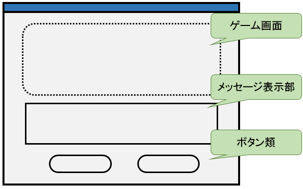
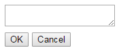
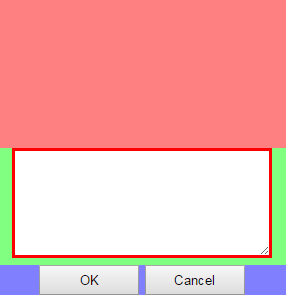

画面の概要を決める
- 画面上に並べたい要素を漠然と洗い出すだけで良い
- 
HTMLにそのまま記載
- HTMLでそれらしい機能が実現できるタグを調べてまずは書いてみる
- それぞれの領域は <div> タグで区切っておくと良い。
-
<!DOCTYPE html>
<html>
<head>
<meta charset="UTF-8" />
<title>e-freak</title>
</head>
<body>
<main>
<div>
</div>
<div>
<textarea></textarea>
</div>
<div>
<button type="button">OK</button> <button type="button">Cancel</button>
</div>
</main>
</body>
</html>
- 出来上がったHTMLをブラウザで開くと、求めるものとは少し違う画面が表示される
- 
CSS利用のための下準備
- 求める画面に近付けるために、CSSを使って整形するための準備を行う
- 先の画面はHTMLとしては基本的に完成している
- このように論理的な構造のみをHTMLで表現し、視覚的な調整はCSSによって行うのが正しい責務分担
- HTMLタグに、スタイルを適用するためのクラスを追加していく
- クラス名の命名は一例なので、好きなように付けて良い
- IDセレクタによるスタイル指定は非推奨
- ついでにスタイルシートを読み込むための <link> タグも書いておく
-
<!DOCTYPE html>
<html>
<head>
<meta charset="UTF-8" />
<title>e-freak</title>
<link rel="stylesheet" href="./css/default.css" />
</head>
<body>
<main>
<div class="game-field">
</div>
<div class="message-field">
<textarea class="message"></textarea>
</div>
<div class="menu-field">
<button type="button" class="menu">OK</button>
<button type="button" class="menu">Cancel</button>
</div>
</main>
</body>
</html>
CSSで整形
- app/css に、defeult.css を作成する
- クラスに対するスタイルをCSSで記述する
- タグとクラスの組み合わせに対する指定が望ましい
- HTML中に一度しか出現しない仕様となっているタグについては、タグに対する指定で良い
-
@charset 'UTF-8';
body {
margin-left: auto;
margin-right: auto;
text-align: center;
}
div.game-field {
min-height: 150px;
background-color: #FF8080;
}
div.message-field {
background-color: #80FF80;
}
div.menu-field {
background-color: #8080FF;
}
textarea.message {
min-width: 250px;
min-height: 100px;
border-style: solid;
border-width: 3px;
border-color: #FF0000;
}
button.menu {
width: 200px;
height: 30px;
}
- HTMLを開き直して、CSSが適用されていることを確認する
- 